The perimeter of a circle is 44 cm. What is its radius?
GivenPerimeter (circumference) C = 44 cm
To findRadius r
Formula / ideaC = 2πr
Step 1
Write the formula and put the value: 2πr = 44
Step 2
Put π = 227: 2 × 227 × r = 44, that is 447 r = 44
Step 3
Multiply both sides by 744: r = 44 × 744 = 7
AnswerRadius = 7 cm
💡 Check: 2 × 227 × 7 = 44 cm ✔
2
Calculate, correct to 3 significant figures, the circumference of a circle with: (i) radius 7 cm (ii) radius 10 cm (iii) radius 12 cm.
Givenr = 7 cm, 10 cm, 12 cm
To findCircumference C, to 3 significant figures
Formula / ideaC = 2πr, π = 227
(i) r = 7 cm
Step 1
C = 2 × 227 × 7 = 2 × 22 = 44
AnswerC = 44.0 cm (3 s.f.)
(ii) r = 10 cm
Step 1
C = 2 × 227 × 10 = 4407 = 62.857…
Step 2
Round to 3 significant figures: the 4th figure is 5, so 62.8 becomes 62.9
AnswerC ≈ 62.9 cm
(iii) r = 12 cm
Step 1
C = 2 × 227 × 12 = 5287 = 75.428…
Step 2
Round to 3 significant figures: the 4th figure is 2, so it stays 75.4
AnswerC ≈ 75.4 cm
3
Calculate the length of the arc of a circle if: (i) the radius is 3.5 cm and the angle at the centre is 60°, and (ii) the radius is 6.3 m and the angle at the centre is 120°.
Given(i) r = 3.5 cm, θ = 60° · (ii) r = 6.3 m, θ = 120°
To findArc length l
Formula / ideal = 2πr × θ360°
(i) r = 3.5 cm, θ = 60°
Step 1
Full circumference = 2 × 227 × 3.5 = 22 cm
Step 2
The arc is 60360 = 16 of the circle
Step 3
l = 22 × 16 = 113 = 3.666…
Answerl ≈ 3.67 cm
(ii) r = 6.3 m, θ = 120°
Step 1
Full circumference = 2 × 227 × 6.3 = 2 × 22 × 0.9 = 39.6 m
Step 2
The arc is 120360 = 13 of the circle
Step 3
l = 39.6 × 13 = 13.2
Answerl = 13.2 m
4
Find the perimeter of a sector (i.e., the curved portion as well as the two straight portions) of a circle of radius 14 cm and sector angle 75°.
Givenr = 14 cm, θ = 75°
To findPerimeter of the sector
Formula / ideaPerimeter of sector = arc + 2r, arc = 2πr × θ360°
Find the perimeters of the following shapes in Fig. 6.14 (i) to (ix), taking the arcs to be quarter, half or three-quarters of a circle as appropriate.
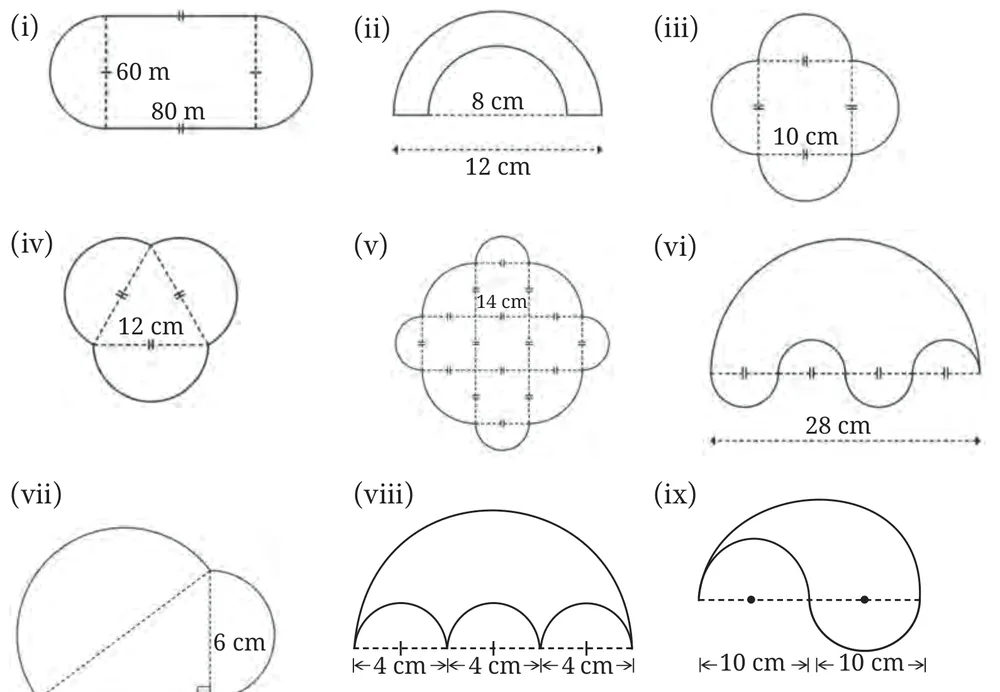
Fig. 6.14: nine shapes made of straight lines and arcs
Formula / ideaSemicircle on diameter d has arc length πd2. Only the outer boundary counts in a perimeter.
(i) Running track: rectangle 80 m × 60 m with semicircles on the 60 m sides
Step 1
Straight parts: 2 × 80 = 160 m
Step 2
Two semicircles of diameter 60 m make one full circle: π × 60 = 227 × 60 = 188.57 m
AnswerPerimeter = 160 + 188.57 = 348.57 m
(ii) Half-ring: outer diameter 12 cm, inner diameter 8 cm
(viii) Semicircle on 12 cm and three semicircles on 4 cm
Step 1
Big arc = π × 6 = 6π; three small arcs = 3 × π × 2 = 6π
AnswerPerimeter = 12π ≈ 37.71 cm
(ix) Semicircle on 20 cm and two semicircles of radius 5 cm
Step 1
Big arc = π × 10 = 10π; two small arcs = 2 × π × 5 = 10π
AnswerPerimeter = 20π ≈ 62.86 cm
💡 Shortcut: in (vi), (viii) and (ix) the small semicircles on a line add up to the same length as one semicircle on the whole line.
6
If the diameter of a car tyre is 56 cm, then: (i) How far does the car need to travel for the tyre to complete one revolution? (ii) How many revolutions does the tyre make if the car travels 10 km?
GivenDiameter d = 56 cm (r = 28 cm), distance = 10 km
To find(i) distance in one revolution (ii) number of revolutions in 10 km
Formula / ideaDistance in 1 revolution = circumference = πd
(i)
Step 1
Distance = π × d = 227 × 56 = 22 × 8 = 176 cm
AnswerThe car travels 176 cm in one revolution
(ii)
Step 1
Change 10 km to cm: 10 × 1000 × 100 = 10,00,000 cm
Step 2
Revolutions = total distancedistance in one revolution = 1000000176 = 5681.8…
Find the total perimeter of all the petals in each of the given flowers (Fig. 6.15A: centres of the arcs are the midpoints of the sides of a 14 cm square; Fig. 6.15B: centres of the arcs are the vertices of a hexagon of side 42 cm).
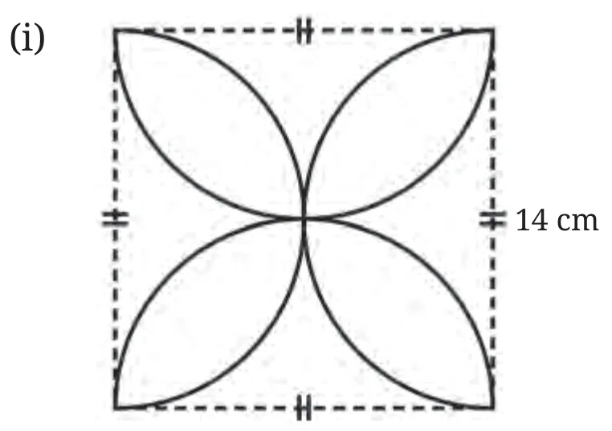
Fig. 6.15A
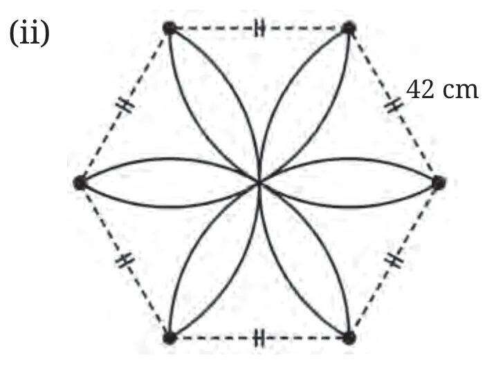
Fig. 6.15B
(i) Square of side 14 cm
Step 1
Each arc is centred at the midpoint of a side, so its radius = 14 ÷ 2 = 7 cm
Step 2
The arc passes through two corners and the centre of the square, so it is a semicircle
Step 3
The 4 petals are made of 4 such semicircles: 4 × π × 7 = 4 × 22 = 88 cm
AnswerTotal perimeter = 88 cm
(ii) Regular hexagon of side 42 cm
Step 1
The centre O and two neighbouring vertices form an equilateral triangle, so each arc (centred at a vertex, radius 42 cm) turns through 60°
Step 2
One arc = 2 × 227 × 42 × 60360 = 264 × 16 = 44 cm
Step 3
Each petal has 2 arcs and there are 6 petals: 12 arcs
AnswerTotal perimeter = 12 × 44 = 528 cm
8
The ratio of the perimeters of two circles is 5 : 4. What is the ratio of their radii?
GivenC₁ : C₂ = 5 : 4
To findr₁ : r₂
Formula / ideaC = 2πr
Step 1
C₁C₂ = 2πr₁2πr₂
Step 2
2π cancels: C₁C₂ = r₁r₂ = 54
Answerr₁ : r₂ = 5 : 4
💡 Perimeter of a circle is directly proportional to its radius.
Exercise Set 6.2
11 questions
1
Find the area of △ADE in Fig. 6.31 (rectangle ABCD with AD = 8 cm and AB = 10 cm, E on BC).
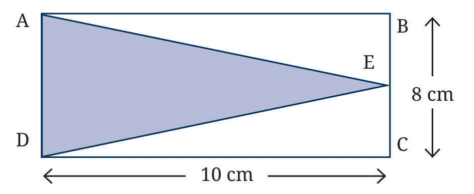
Fig. 6.31
GivenAD = 8 cm, width of rectangle = 10 cm, E on BC
To findArea of △ADE
Formula / ideaArea of triangle = ½ × base × height
Step 1
Take AD = 8 cm as the base
Step 2
E lies on BC, which is parallel to AD, so the height from E to AD = distance between AD and BC = 10 cm
Step 3
Area = ½ × 8 × 10 = 40 cm²
AnswerArea of △ADE = 40 cm² (half of the rectangle)
2
Find the area of a trapezium whose parallel sides are 40 cm and 20 cm and non-parallel sides are 26 cm each.
GivenParallel sides 40 cm and 20 cm, non-parallel sides 26 cm and 26 cm
To findArea of the trapezium
Formula / ideaArea = ½ × (sum of parallel sides) × height; Pythagoras theorem
Step 1
Drop perpendiculars from both ends of the 20 cm side onto the 40 cm side
Step 2
They cut off (40 − 20) ÷ 2 = 10 cm on each side (the trapezium is isosceles)
Step 3
In the right triangle with hypotenuse 26 cm and base 10 cm: h = √(26² − 10²) = √(676 − 100) = √576 = 24 cm
Step 4
Area = ½ × (40 + 20) × 24 = 30 × 24 = 720
AnswerArea = 720 cm²
3
Find the area of a triangle two sides of which are 8 cm and 11 cm, and the perimeter is 32 cm.
Givena = 8 cm, b = 11 cm, perimeter = 32 cm
To findArea
Formula / ideaHeron's formula: Area = √(s(s − a)(s − b)(s − c)), s = a + b + c2
Find the length of the shorter diagonal of a rhombus whose area is 128 cm², if one diagonal is twice the other.
GivenArea = 128 cm², d₂ = 2d₁
To findShorter diagonal d₁
Formula / ideaArea of rhombus = ½ × d₁ × d₂
Step 1
Let the shorter diagonal be d. The other is 2d
Step 2
½ × d × 2d = 128, so d² = 128
Step 3
d = √128 = √(64 × 2) = 8√2
AnswerShorter diagonal = 8√2 ≈ 11.31 cm
6
ABCD is a parallelogram, and P and Q are two points on AB. Find the ratio of the areas of △PCD and △QCD.
GivenABCD a parallelogram, P and Q on AB
To findar(△PCD) : ar(△QCD)
Formula / ideaTriangles on the same base and between the same parallels have equal areas
Step 1
Both triangles have the same base CD
Step 2
P and Q lie on AB, and AB ∥ CD, so the height of both triangles = distance between AB and CD
Step 3
Same base and same height, so the areas are equal (each is half of the parallelogram)
Answerar(△PCD) : ar(△QCD) = 1 : 1
7
O is any point on the diagonal PR of a parallelogram PQRS. Prove that ar(△PSO) = ar(△PQO).
GivenPQRS a parallelogram, O on diagonal PR
To findProve ar(△PSO) = ar(△PQO)
Formula / ideaA median divides a triangle into two triangles of equal area; diagonals of a parallelogram bisect each other
Step 1
Join QS. Let the diagonals meet at M. Then M is the midpoint of QS
Step 2
In △PQS, PM is a median, so ar(△PQM) = ar(△PSM) … (1)
Step 3
In △OQS, OM is a median, so ar(△OQM) = ar(△OSM) … (2)
Step 4
Subtract (2) from (1) (or add, if O is beyond M): ar(△PQO) = ar(△PSO)
AnswerHence ar(△PSO) = ar(△PQO). Proved.
💡 Short way: both triangles share the base PO, and S and Q are at equal distances from line PR because QM = MS.
8
Show that the figure formed by joining the midpoints of the sides of a quadrilateral, in order, is a parallelogram whose area is half the area of the quadrilateral.
GivenABCD a quadrilateral; P, Q, R, S are the midpoints of AB, BC, CD, DA
To findProve PQRS is a parallelogram and ar(PQRS) = ½ ar(ABCD)
Formula / ideaMidpoint theorem; a median halves the area of a triangle
Step 1
Parallelogram: in △ABC, PQ ∥ AC and PQ = ½AC; in △ADC, SR ∥ AC and SR = ½AC. So PQ ∥ SR and PQ = SR, hence PQRS is a parallelogram
Step 2
In △ABD, BS is a median, so ar(ABS) = ½ ar(ABD). In △ABS, SP is a median, so ar(APS) = ½ ar(ABS) = ¼ ar(ABD)
Step 3
In the same way ar(CQR) = ¼ ar(CBD). Adding: ar(APS) + ar(CQR) = ¼ ar(ABCD)
Step 4
Similarly ar(BPQ) + ar(DRS) = ¼ ar(ABCD)
Step 5
The four corner triangles together = ½ ar(ABCD), so ar(PQRS) = ar(ABCD) − ½ ar(ABCD) = ½ ar(ABCD)
AnswerPQRS is a parallelogram and ar(PQRS) = ½ ar(ABCD). Proved.
9
In △ABC, D is the midpoint of BC and P is any point on the median AD. Show that ar(△ABP) = ar(△ACP).
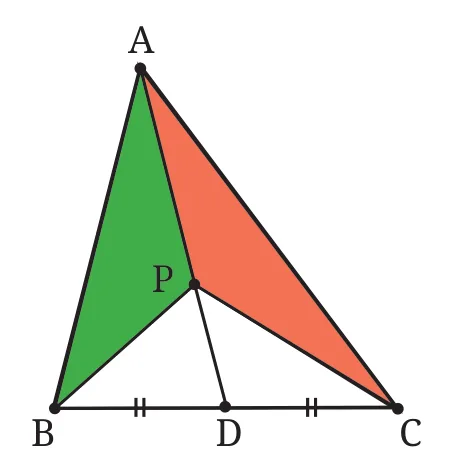
Fig. 6.32
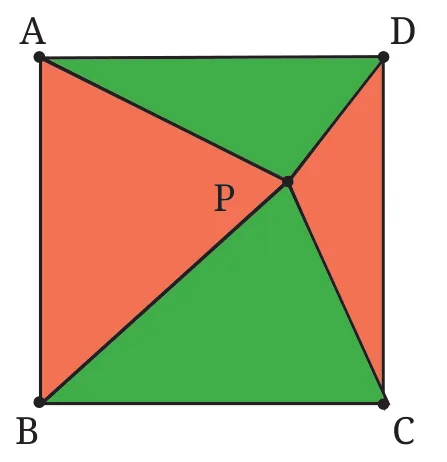
Fig. 6.33
GivenD the midpoint of BC, P on AD
To findProve ar(△ABP) = ar(△ACP)
Formula / ideaA median divides a triangle into two parts of equal area
Step 1
AD is a median of △ABC, so ar(△ABD) = ar(△ACD) … (1)
Step 2
PD is a median of △PBC, so ar(△PBD) = ar(△PCD) … (2)
Find the area of a sector of a circle with radius 7 cm and angle 60°.
Givenr = 7 cm, θ = 60°
To findArea of the sector
Formula / ideaArea of sector = πr² × θ360°
Step 1
Area of circle = 227 × 7 × 7 = 154 cm²
Step 2
Sector = 154 × 60360 = 154 × 16 = 773
AnswerArea ≈ 25.67 cm²
2
Find the area of a quadrant of a circle whose circumference is 44 cm.
GivenC = 44 cm
To findArea of a quadrant (¼ of the circle)
Formula / ideaC = 2πr, area = πr²
Step 1
2 × 227 × r = 44, so r = 7 cm
Step 2
Area of the circle = 227 × 7² = 154 cm²
Step 3
Quadrant = 154 ÷ 4 = 38.5
AnswerArea of quadrant = 38.5 cm²
3
The length of the minute hand of a clock is 7 cm. Find the area swept by it in 10 minutes.
Givenr = 7 cm, time = 10 minutes
To findArea swept
Formula / ideaThe minute hand turns 360° in 60 minutes, so 6° per minute
Step 1
Angle in 10 minutes = 10 × 6° = 60°
Step 2
Area = 227 × 7 × 7 × 60360 = 154 × 16 = 773
AnswerArea swept ≈ 25.67 cm²
4
A chord of a circle of radius 10 cm subtends a right angle at the centre. Find the area of (i) the minor sector (ii) the major sector. (Use π = 3.14)
Givenr = 10 cm, angle = 90°, π = 3.14
To find(i) minor sector (ii) major sector
Step 1
Area of circle = 3.14 × 10 × 10 = 314 cm²
(i) Minor sector (90°)
Step 1
314 × 90360 = 314 × 14 = 78.5
AnswerMinor sector = 78.5 cm²
(ii) Major sector (360° − 90° = 270°)
Step 1
314 × 270360 = 314 × 34 = 235.5 (or 314 − 78.5)
AnswerMajor sector = 235.5 cm²
5
A chord of a circle of radius 15 cm subtends an angle of 60° at the centre. Find the areas of the minor and major segments. (Use π = 3.14 and √3 = 1.73)
Givenr = 15 cm, θ = 60°
To findMinor segment and major segment
Formula / ideaSegment = sector − triangle; area of equilateral triangle = √34 a²
The triangle has two sides 15 cm with 60° between them, so it is equilateral: area = 1.734 × 225 = 97.31 cm² (more exactly 97.3125)
Step 3
Minor segment = 117.75 − 97.31 = 20.44 cm²
Step 4
Area of circle = 3.14 × 225 = 706.5 cm², so major segment = 706.5 − 20.44 = 686.06 cm²
AnswerMinor segment ≈ 20.44 cm², major segment ≈ 686.06 cm²
6
A car has two wipers which do not overlap. Each wiper has a blade of length 28 cm sweeping through an angle of 120°. Find the total area cleaned at each sweep of the blades.
💡 Some prints show πr²(1/6 − √3/4), which would be negative. The π goes only with 1/6.
8
An equilateral triangle is inscribed in a circle of radius r. Show that the ratio of the area of the triangle to the area of the circle is 3√34π ≈ 0.413.
GivenCircle of radius r, inscribed equilateral triangle
To findArea of triangle : area of circle
Step 1
Join the centre O to the three vertices. Each angle at O = 360° ÷ 3 = 120°
Step 2
The perpendicular from O to a side is r cos 60° = r2, so half a side = √(r² − r²4) = √32 r, and the side = √3 r
A square is inscribed in a circle of radius r. Show that the ratio of the area of the square to the area of the circle is 2π ≈ 0.637.
Step 1
The diagonal of the inscribed square is a diameter = 2r
Step 2
Area of a square = ½ × diagonal² = ½ × (2r)² = 2r²
Step 3
Ratio = 2r² ÷ πr² = 2π ≈ 0.637
AnswerRatio = 2/π ≈ 0.637. Proved.
10
A regular hexagon is inscribed in a circle of radius r. Show that the ratio of the area of the hexagon to the area of the circle is 3√32π ≈ 0.827. Why is this twice the answer of Question 8?
Step 1
Joining the centre to the 6 vertices gives 6 equilateral triangles of side r (each angle at the centre is 60°)
Step 2
Area of hexagon = 6 × √34 r² = 3√32 r²
Step 3
Ratio = 3√32 r² ÷ πr² = 3√32π ≈ 0.827
Step 4
Why twice: join alternate vertices of the hexagon to get the inscribed equilateral triangle of Q8. It is made of 3 pieces, each equal to one of the 6 small triangles of the hexagon. So the hexagon (6 pieces) is twice the triangle (3 pieces)
AnswerRatio = 3√3/2π ≈ 0.827 = 2 × 0.413
End-of-Chapter Exercises
27 questions
Use π = 227 unless the question says otherwise. Questions marked * are challenge problems.
1
Draw figures to show (a + b)(a − b) = a² − b² and (a + b + c)² = a² + b² + c² + 2ab + 2bc + 2ca as areas.
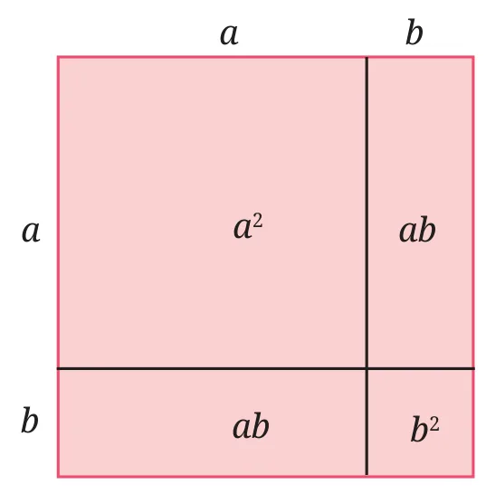
Fig. 6.41: (a + b)² = a² + 2ab + b² as an example
(a + b)(a − b) = a² − b²
Step 1
Draw a square of side a (area a²). Cut away a small square of side b from one corner. The leftover L-shape has area a² − b²
Step 2
Cut the L-shape into two strips: a × (a − b) and b × (a − b)
Step 3
Turn the small strip and put it at the end of the big one: you get a rectangle of length (a + b) and width (a − b)
AnswerSo (a + b)(a − b) = a² − b²
(a + b + c)²
Step 1
Draw a square of side (a + b + c) and split each side into parts a, b, c
Step 2
You get 9 pieces: a², b², c² along the diagonal, and two each of ab, bc and ca
Find the area of a triangle with sides 7 cm, 24 cm and 25 cm in two different ways.
Way 1: right triangle
Step 1
7² + 24² = 49 + 576 = 625 = 25², so the triangle is right-angled with legs 7 and 24
Step 2
Area = ½ × 7 × 24 = 84 cm²
Way 2: Heron's formula
Step 1
s = (7 + 24 + 25) ÷ 2 = 28; s − a = 21, s − b = 4, s − c = 3
Step 2
Area = √(28 × 21 × 4 × 3) = √7056 = 84 cm²
AnswerArea = 84 cm² both ways
7
A bicycle wheel of diameter 60 cm makes 100 revolutions. How far does the bicycle travel?
Givend = 60 cm, 100 revolutions
Step 1
One revolution = πd = 227 × 60 = 13207 cm
Step 2
100 revolutions = 1320007 cm ≈ 18,857 cm
AnswerDistance ≈ 188.57 m
8
Find the area of a quadrant of a circle whose circumference is 66 cm.
Step 1
2 × 227 × r = 66, so r = 66 × 744 = 10.5 cm
Step 2
Area of circle = 227 × 10.5 × 10.5 = 346.5 cm²
Step 3
Quadrant = 346.5 ÷ 4 = 86.625
AnswerArea of quadrant ≈ 86.63 cm²
9
The radius of a car wheel is 28 cm. How far does it go in one revolution, and how many revolutions does it make in 1 km?
Step 1
One revolution = 2πr = 2 × 227 × 28 = 176 cm
Step 2
1 km = 1,00,000 cm. Revolutions = 100000176 ≈ 568.2
Answer176 cm per revolution; about 568 revolutions in 1 km
10*
Two rectangles have the same area and the same perimeter. Must they be congruent?
Step 1
Let the sides of a rectangle be x and y. Same perimeter means x + y = p (fixed) and same area means xy = A (fixed)
Step 2
Then x and y are the two roots of t² − pt + A = 0
Step 3
A quadratic has only one pair of roots, so the sides are fixed by p and A
AnswerYes, they must be congruent
💡 This is not true for triangles: two different triangles can have the same area and perimeter.
11
Using Fig. 6.42, show that the area of a trapezium is ½(a + b)h.
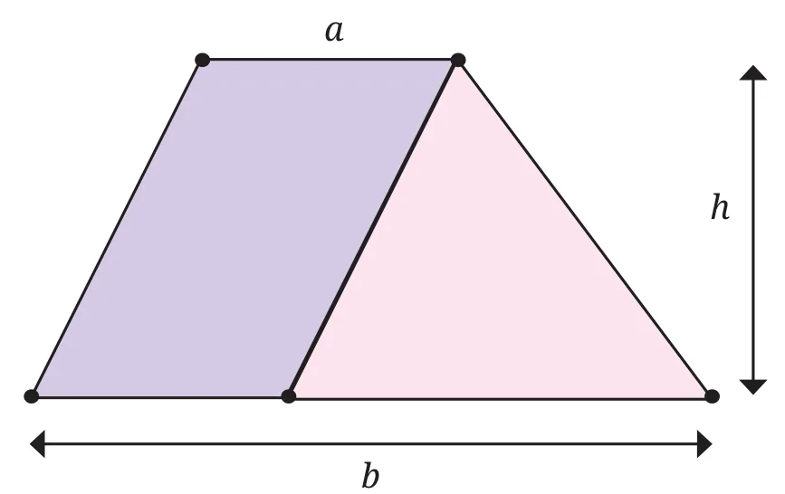
Fig. 6.42
Step 1
Split the trapezium into a parallelogram (base a, height h) and a triangle (base b − a, height h)
Step 2
Area = ah + ½(b − a)h
Step 3
= ½h(2a + b − a) = ½(a + b)h
AnswerArea of trapezium = ½(a + b)h. Proved.
12
Divide a trapezium into two triangles and get the same formula.
Step 1
Draw a diagonal. One triangle has the top side a as its base, the other has the bottom side b as its base
Step 2
Both have the same height h (distance between the parallel sides)
Step 3
Area = ½ah + ½bh = ½(a + b)h
AnswerArea = ½(a + b)h. Proved.
13
Use two identical trapeziums to make a parallelogram and get the formula.
Step 1
Rotate one copy by 180° and join it to the first along a slanting side
Step 2
The top becomes a + b and the bottom b + a: the shape is a parallelogram of base (a + b) and height h
Step 3
Its area = (a + b)h, so one trapezium = ½(a + b)h
AnswerArea of trapezium = ½(a + b)h
14
Show that the area of a kite is half the product of its diagonals (i) using algebra (ii) using geometry.
GivenKite ABCD, AB = AD, CB = CD; diagonals AC and BD meet at O with AC ⊥ BD
(i) Algebra
Step 1
Area = ar(△ABC) + ar(△ADC) = ½ × AC × OB + ½ × AC × OD
Step 2
= ½ × AC × (OB + OD) = ½ × AC × BD
(ii) Geometry
Step 1
Draw a rectangle around the kite with sides parallel to the diagonals; its sides are AC and BD
Step 2
The diagonals cut it into 4 small rectangles, and each side of the kite cuts one of them exactly in half
Step 3
So the kite is half of the rectangle
AnswerArea of kite = ½ × d₁ × d₂
15
Fitting congruent shapes: (i) a rectangle PQRS with sides double those of ABCD (ii) a triangle with sides double (iii) a triangle with sides tripled. How many copies fit?
(i) Rectangle with sides doubled
Step 1
Area = 2a × 2b = 4ab = 4 × area of ABCD
Answer4 copies fit, in a 2 × 2 arrangement
(ii) Triangle with sides doubled
Step 1
Base and height both double, so the area becomes 2 × 2 = 4 times
Step 2
Join the midpoints of the sides: 4 small triangles, each with sides a, b, c (midpoint theorem), so each is congruent to △ABC
Answer4 copies fit
(iii) Triangle with sides tripled
Step 1
Area becomes 3 × 3 = 9 times
Step 2
Divide each side into 3 equal parts and draw lines parallel to the sides: 9 small congruent triangles (6 pointing up, 3 down)
Answer9 copies fit
16*
What fraction of the triangle (Fig. 6.43) and of the square (Fig. 6.44) is shaded?
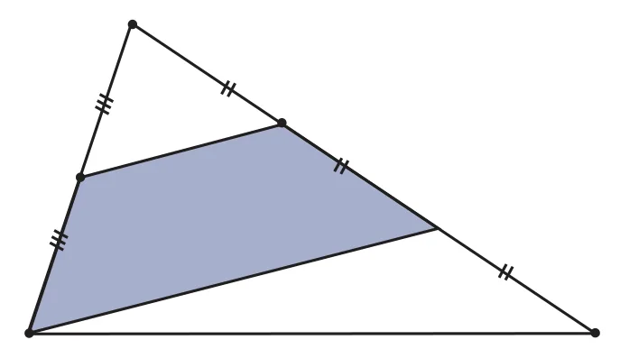
Fig. 6.43
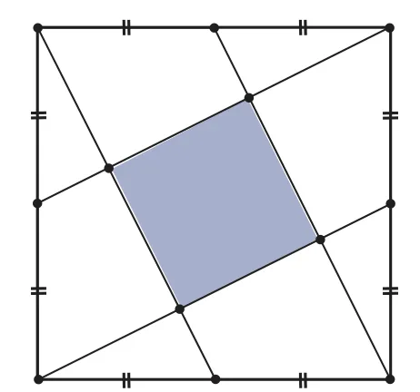
Fig. 6.44
Fig. 6.43
Step 1
Call the top vertex T. One side is cut at its midpoint M, the other side into three equal parts at P₁ and P₂ (P₁ nearer T)
Step 2
The triangle with vertex T and P₂ has the same height as the whole and 23 of the base, so it is 23 of the whole
Step 3
△TMP₁ = 12 × 13 = 16 of the whole
Step 4
Shaded = 23 − 16 = 12
Answer½ of the triangle is shaded
Fig. 6.44
Step 1
Each corner is joined to the midpoint of a side, making 4 small right triangles beside the shaded square
Step 2
Turn each small triangle half a turn about the midpoint it touches: it fills the notch next to it. The big square is rebuilt as 5 copies of the shaded square
Step 3
Check: with side 2, the shaded square has side 2√5, area 45, and 45 ÷ 4 = 15
Answer⅕ of the square is shaded
17
What fraction of the rectangle is covered by the circles in Figs. 6.45 and 6.46?
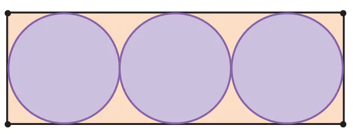
Fig. 6.45
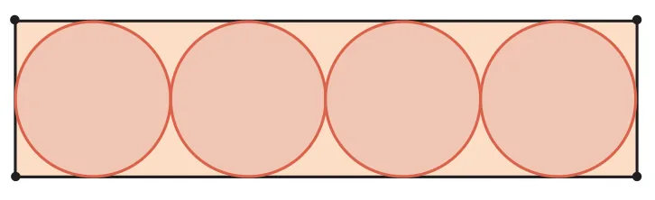
Fig. 6.46
Step 1
Let there be n circles of radius r in a row. The rectangle is 2nr long and 2r wide: area 4nr²
Step 2
The circles cover n × πr²
Step 3
Fraction = nπr²4nr² = π4
Answerπ/4 ≈ 0.785 (about 78.5%) in both figures
18
Make a conjecture for 10, 20 or 50 circles in a row and prove it.
Step 1
Conjecture: the circles always cover π4 of the rectangle, however many there are
Step 2
Proof: with n circles, nπr²(2nr × 2r) = π4; the n cancels
AnswerFor 10, 20 or 50 circles the fraction is always π/4
19*
Nine identical rectangles make a large rectangle of area 72 cm² (Fig. 6.47). Find the perimeter of each small rectangle.
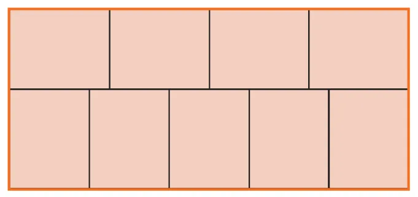
Fig. 6.47
Given9 identical rectangles, total area 72 cm²
Step 1
Let each small rectangle be L × W (L the longer side). The top row has 4 lying flat (length 4L), the bottom row 5 standing up (length 5W). So 4L = 5W, W = 4L5
Step 2
Each has area 72 ÷ 9 = 8 cm², so LW = 8
Step 3
L × 4L5 = 8 ⟹ L² = 10 ⟹ L = √10 ≈ 3.16 cm, W = 4√105 ≈ 2.53 cm
Step 4
Perimeter = 2(L + W) = 2 × 9√105 = 18√105
AnswerPerimeter of each ≈ 11.38 cm
20*
Lines join a vertex to the points that divide the opposite side into three equal parts (Fig. 6.48). Show that the blue and red triangles have equal areas.
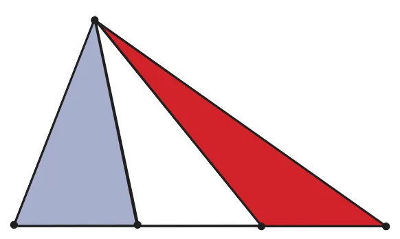
Fig. 6.48
Step 1
The triangles share the same top vertex, so they have the same height
Step 2
Their bases are equal (each one-third of the side)
Step 3
Same base and same height, so the same area
AnswerBlue and red triangles have equal areas
💡 Cutting idea: each triangle can be cut along the line joining the midpoints of its slanting sides and turned into a parallelogram with the same base and half the height, so one can be rearranged onto the other.
21*
A quarter circle and two semicircles are drawn in a square (Fig. 6.49). Show that regions A and B have equal areas.
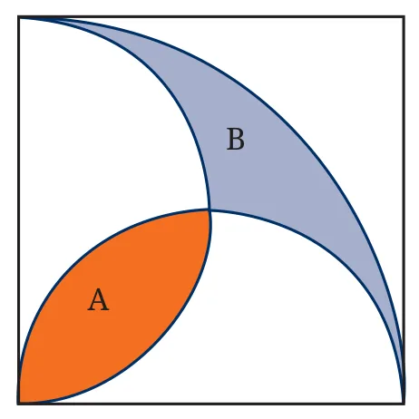
Fig. 6.49
Step 1
Let the side of the square be 2r. Quarter circle area = ¼ π(2r)² = πr²
Step 2
Each semicircle (radius r) has area ½πr², so the two together = πr²
Step 3
The semicircles overlap in A, so the region they cover = πr² − A
Step 4
The quarter circle = that region + B, so πr² = πr² − A + B
AnswerTherefore A = B. Proved.
22*
Four semicircles are drawn inside a square of side 2 (Fig. 6.50). Find the perimeter and area of the 4-petal flower.
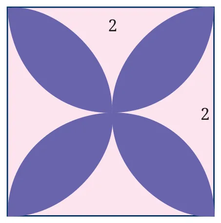
Fig. 6.50
Step 1
Each semicircle has radius 1. Each petal is the overlap of two neighbouring semicircles, and its two edges are quarter circles of radius 1
Step 2
Perimeter: 8 quarter arcs = 2 full circles of radius 1 = 2 × 2π = 4π
Step 3
One petal = 2 × (quarter circle − right triangle) = 2(π4 − 12) = π2 − 1
Step 4
Four petals = 2π − 4
AnswerPerimeter = 4π ≈ 12.57 units; area = 2π − 4 ≈ 2.29 sq. units
23*
Two circles have the same centre. A chord BC of length l of the larger circle touches the smaller circle (Fig. 6.51). Show that the area of the ring is ¼πl².
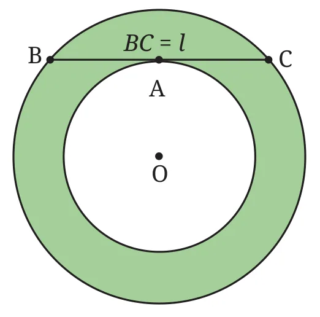
Fig. 6.51
Step 1
Let BC touch the small circle at A. Then OA ⊥ BC (radius ⊥ tangent), so A is the midpoint of BC and AB = l2
Step 2
In right △OAB: OB² − OA² = AB², that is R² − r² = l²4
Step 3
Ring area = πR² − πr² = π(R² − r²) = π × l²4
AnswerArea of ring = ¼πl². Proved. (We do not need R or r.)
24*
Semicircles are drawn on the sides of a right triangle (Fig. 6.52). Show that Area(A) + Area(B) = Area(C).
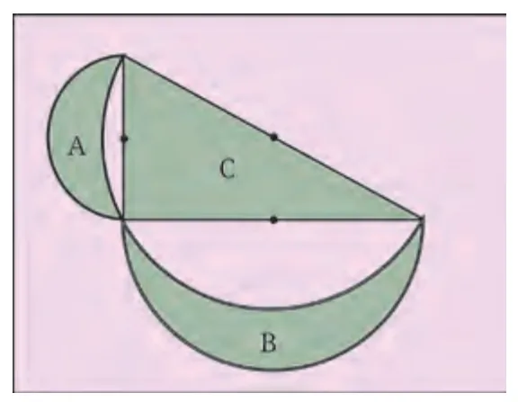
Fig. 6.52
Step 1
A semicircle on a side of length x has area ½π(x2)² = π8 x²
Step 2
With legs a, b and hypotenuse c: A + B = π8(a² + b²)
Step 3
By Pythagoras a² + b² = c², so A + B = π8 c² = C
AnswerArea(A) + Area(B) = Area(C). Proved.
25*
Two circles of radius r pass through each other's centres (Fig. 6.53). Find the area common to both.
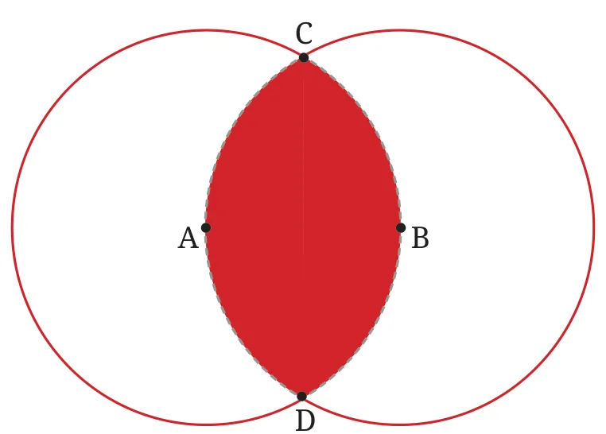
Fig. 6.53
Step 1
The centres A, B and an intersection point form an equilateral triangle, so ∠CAD = ∠CBD = 120°
Step 2
The common region is two equal segments. One segment = sector 120° − triangle = πr²3 − √34 r²
Step 3
Common area = 2 × (πr²3 − √34 r²) = r²(2π3 − √32)
AnswerCommon area = r²(2π/3 − √3/2) ≈ 1.23 r²
26*
Three triangles A, B and C are cut off from a rectangle (Fig. 6.54). Show that the area of the rectangle is 2(A + C)(B + C)C.
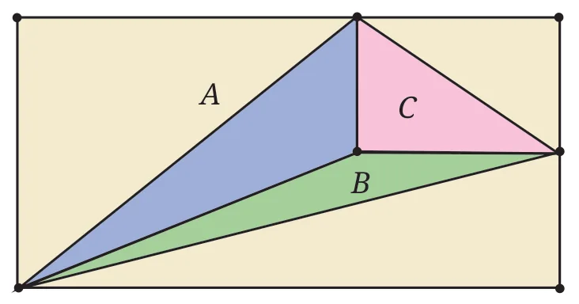
Fig. 6.54
Step 1
Let the rectangle be w × h. The point on the top side is q from the left, the point on the right side is at height r. Then A = ½q(h − r), B = ½r(w − q), C = ½(h − r)(w − q)
Step 2
A + C = ½(h − r)(q + w − q) = ½(h − r)w and B + C = ½(w − q)(r + h − r) = ½(w − q)h
Step 3
(A + C)(B + C) = ¼ wh (h − r)(w − q) = ¼ wh × 2C = ½ wh × C
Step 4
So wh = 2(A + C)(B + C)C
AnswerArea of rectangle = 2(A + C)(B + C)/C. Proved.
27*
A quarter circle, a semicircle and a triangle are drawn (Fig. 6.55). Show that the two shaded regions have equal areas.
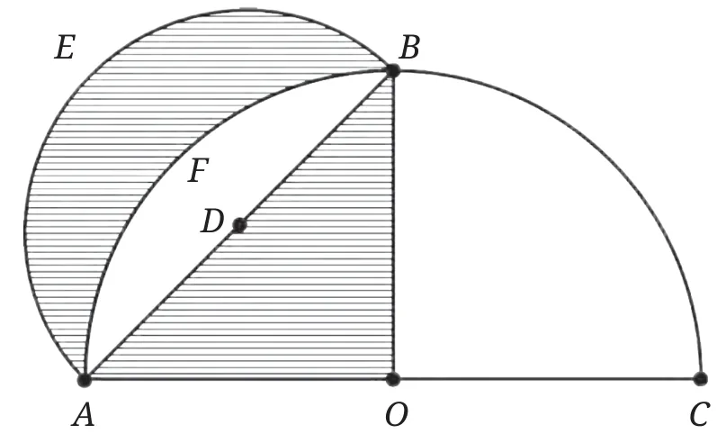
Fig. 6.55
Step 1
Let OA = OB = r. Then AB = r√2 and ar(△AOB) = ½ r²
Step 2
Semicircle on AB has radius r√22: area = ½π × r²2 = πr²4
Step 3
Segment AFB = quarter circle − △AOB = πr²4 − ½ r²
Step 4
Moon (lune) AEBF = semicircle − segment = πr²4 − (πr²4 − ½ r²) = ½ r²
AnswerLune = ½ r² = area of △AOB. Proved.
💡 This is the famous lune of Hippocrates: a curved shape with exactly the same area as a triangle.
Made by MT Classes, S.K. Nagar, Motihari for Class 9 CBSE students. Questions are from the NCERT Ganita Manjari textbook; solutions are written by MT Classes. Back to the chapter notes · All notes